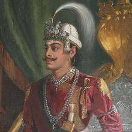

Pratap Singh Shah Dev
Biography:
Pratap Singh Shah Dev was born on April 16, 1751 A.D in Gorkha. He was the eldest son of
Prithvi Narayan Shah Dev and Narendra Rajya Lakshmi Devi. He was the second King
of Kingdom of Nepal from 11 January, 1775 to 17 November, 1777. He became King at
the age of 24 in 1775. He died at the age of 26 on 17 November 1777 in Kathmandu, Nepal.